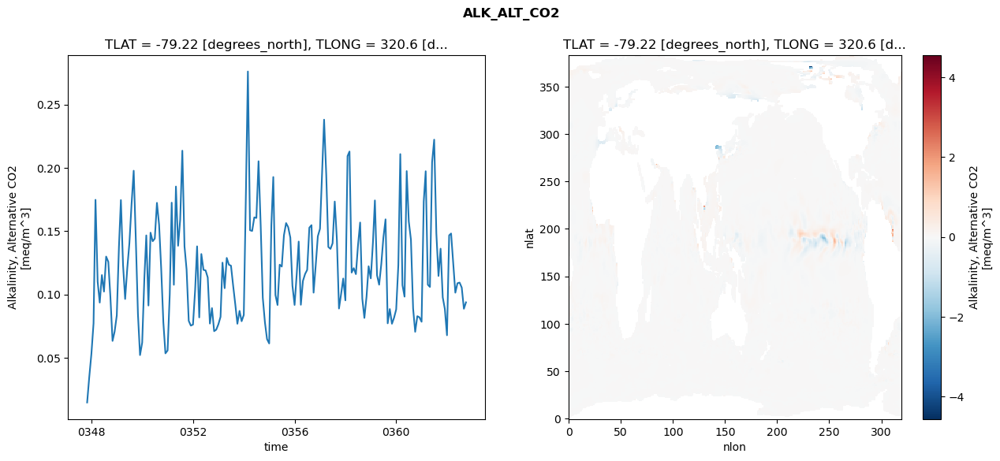
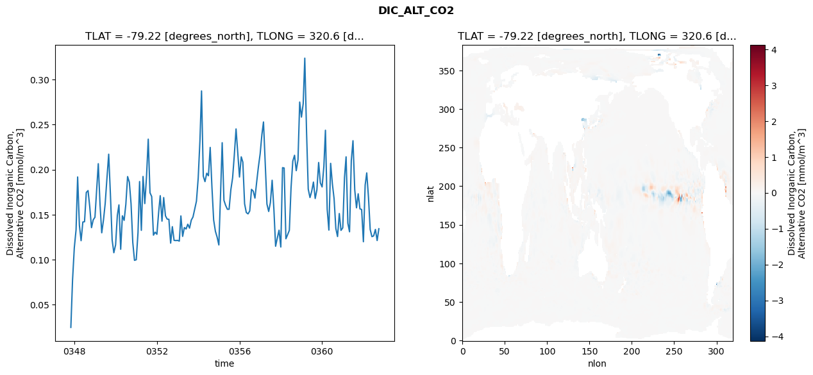
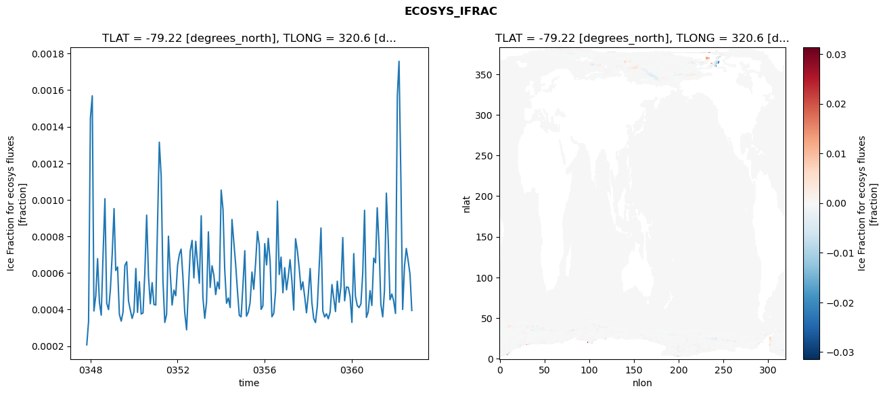
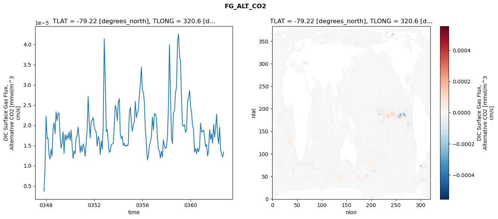

glb-dor_North_Atlantic_basin_008_1999-10-01_00035#
Simulation details#
Case: smyle.cdr-atlas-v0.glb-dor_North_Atlantic_basin_008_1999-10-01_00035.001
Basin: North_Atlantic_basin
Polygon: 8.0
Start date: 1999-10
Show code cell source Hide code cell source
import xarray as xr
import matplotlib.pyplot as plt
Show code cell source Hide code cell source
zarr_store = "/path/to/zarr/store"
# Parameters
zarr_store = "/global/cfs/projectdirs/m4746/Projects/Ocean-CDR-Atlas-v0/data/validation/smyle.cdr-atlas-v0.glb-dor_North_Atlantic_basin_008_1999-10-01_00035.001.validation.zarr"
Show code cell source Hide code cell source
%%time
ds_o = xr.open_zarr(zarr_store).compute()
ds_o
CPU times: user 639 ms, sys: 486 ms, total: 1.13 s
Wall time: 1.43 s
<xarray.Dataset> Size: 2MB
Dimensions: (nlat: 384, nlon: 320, time: 180)
Coordinates:
TLAT float64 8B -79.22
TLONG float64 8B 320.6
ULAT float64 8B -78.95
ULONG float64 8B 321.1
* time (time) object 1kB 0347-11-01 00:00:00 ... 0362-10-01 0...
z_t float32 4B 500.0
Dimensions without coordinates: nlat, nlon
Data variables:
ALK_ALT_CO2_diff (nlat, nlon) float32 492kB nan nan nan ... nan nan nan
ALK_ALT_CO2_rmse (time) float64 1kB 0.01455 0.03439 ... 0.0886 0.09368
DIC_ALT_CO2_diff (nlat, nlon) float32 492kB nan nan nan ... nan nan nan
DIC_ALT_CO2_rmse (time) float64 1kB 0.02477 0.07725 ... 0.1212 0.1343
ECOSYS_IFRAC_diff (nlat, nlon) float32 492kB nan nan nan ... nan nan nan
ECOSYS_IFRAC_rmse (time) float64 1kB 0.0002072 0.0003344 ... 0.0003949
FG_ALT_CO2_diff (nlat, nlon) float32 492kB nan nan nan ... nan nan nan
FG_ALT_CO2_rmse (time) float64 1kB 3.692e-06 9.572e-06 ... 1.343e-05xarray.Dataset
- nlat: 384
- nlon: 320
- time: 180
- TLAT()float64-79.22
- long_name :
- array of t-grid latitudes
- units :
- degrees_north
array(-79.22052261)
- TLONG()float64320.6
- long_name :
- array of t-grid longitudes
- units :
- degrees_east
array(320.56250892)
- ULAT()float64-78.95
- long_name :
- array of u-grid latitudes
- units :
- degrees_north
array(-78.95289509)
- ULONG()float64321.1
- long_name :
- array of u-grid longitudes
- units :
- degrees_east
array(321.12500894)
- time(time)object0347-11-01 00:00:00 ... 0362-10-...
- bounds :
- time_bound
- long_name :
- time
array([cftime.DatetimeNoLeap(347, 11, 1, 0, 0, 0, 0, has_year_zero=True), cftime.DatetimeNoLeap(347, 12, 1, 0, 0, 0, 0, has_year_zero=True), cftime.DatetimeNoLeap(348, 1, 1, 0, 0, 0, 0, has_year_zero=True), cftime.DatetimeNoLeap(348, 2, 1, 0, 0, 0, 0, has_year_zero=True), cftime.DatetimeNoLeap(348, 3, 1, 0, 0, 0, 0, has_year_zero=True), cftime.DatetimeNoLeap(348, 4, 1, 0, 0, 0, 0, has_year_zero=True), cftime.DatetimeNoLeap(348, 5, 1, 0, 0, 0, 0, has_year_zero=True), cftime.DatetimeNoLeap(348, 6, 1, 0, 0, 0, 0, has_year_zero=True), cftime.DatetimeNoLeap(348, 7, 1, 0, 0, 0, 0, has_year_zero=True), cftime.DatetimeNoLeap(348, 8, 1, 0, 0, 0, 0, has_year_zero=True), cftime.DatetimeNoLeap(348, 9, 1, 0, 0, 0, 0, has_year_zero=True), cftime.DatetimeNoLeap(348, 10, 1, 0, 0, 0, 0, has_year_zero=True), cftime.DatetimeNoLeap(348, 11, 1, 0, 0, 0, 0, has_year_zero=True), cftime.DatetimeNoLeap(348, 12, 1, 0, 0, 0, 0, has_year_zero=True), cftime.DatetimeNoLeap(349, 1, 1, 0, 0, 0, 0, has_year_zero=True), cftime.DatetimeNoLeap(349, 2, 1, 0, 0, 0, 0, has_year_zero=True), cftime.DatetimeNoLeap(349, 3, 1, 0, 0, 0, 0, has_year_zero=True), cftime.DatetimeNoLeap(349, 4, 1, 0, 0, 0, 0, has_year_zero=True), cftime.DatetimeNoLeap(349, 5, 1, 0, 0, 0, 0, has_year_zero=True), cftime.DatetimeNoLeap(349, 6, 1, 0, 0, 0, 0, has_year_zero=True), cftime.DatetimeNoLeap(349, 7, 1, 0, 0, 0, 0, has_year_zero=True), cftime.DatetimeNoLeap(349, 8, 1, 0, 0, 0, 0, has_year_zero=True), cftime.DatetimeNoLeap(349, 9, 1, 0, 0, 0, 0, has_year_zero=True), cftime.DatetimeNoLeap(349, 10, 1, 0, 0, 0, 0, has_year_zero=True), cftime.DatetimeNoLeap(349, 11, 1, 0, 0, 0, 0, has_year_zero=True), cftime.DatetimeNoLeap(349, 12, 1, 0, 0, 0, 0, has_year_zero=True), cftime.DatetimeNoLeap(350, 1, 1, 0, 0, 0, 0, has_year_zero=True), cftime.DatetimeNoLeap(350, 2, 1, 0, 0, 0, 0, has_year_zero=True), cftime.DatetimeNoLeap(350, 3, 1, 0, 0, 0, 0, has_year_zero=True), cftime.DatetimeNoLeap(350, 4, 1, 0, 0, 0, 0, has_year_zero=True), cftime.DatetimeNoLeap(350, 5, 1, 0, 0, 0, 0, has_year_zero=True), cftime.DatetimeNoLeap(350, 6, 1, 0, 0, 0, 0, has_year_zero=True), cftime.DatetimeNoLeap(350, 7, 1, 0, 0, 0, 0, has_year_zero=True), cftime.DatetimeNoLeap(350, 8, 1, 0, 0, 0, 0, has_year_zero=True), cftime.DatetimeNoLeap(350, 9, 1, 0, 0, 0, 0, has_year_zero=True), cftime.DatetimeNoLeap(350, 10, 1, 0, 0, 0, 0, has_year_zero=True), cftime.DatetimeNoLeap(350, 11, 1, 0, 0, 0, 0, has_year_zero=True), cftime.DatetimeNoLeap(350, 12, 1, 0, 0, 0, 0, has_year_zero=True), cftime.DatetimeNoLeap(351, 1, 1, 0, 0, 0, 0, has_year_zero=True), cftime.DatetimeNoLeap(351, 2, 1, 0, 0, 0, 0, has_year_zero=True), cftime.DatetimeNoLeap(351, 3, 1, 0, 0, 0, 0, has_year_zero=True), cftime.DatetimeNoLeap(351, 4, 1, 0, 0, 0, 0, has_year_zero=True), cftime.DatetimeNoLeap(351, 5, 1, 0, 0, 0, 0, has_year_zero=True), cftime.DatetimeNoLeap(351, 6, 1, 0, 0, 0, 0, has_year_zero=True), cftime.DatetimeNoLeap(351, 7, 1, 0, 0, 0, 0, has_year_zero=True), cftime.DatetimeNoLeap(351, 8, 1, 0, 0, 0, 0, has_year_zero=True), cftime.DatetimeNoLeap(351, 9, 1, 0, 0, 0, 0, has_year_zero=True), cftime.DatetimeNoLeap(351, 10, 1, 0, 0, 0, 0, has_year_zero=True), cftime.DatetimeNoLeap(351, 11, 1, 0, 0, 0, 0, has_year_zero=True), cftime.DatetimeNoLeap(351, 12, 1, 0, 0, 0, 0, has_year_zero=True), cftime.DatetimeNoLeap(352, 1, 1, 0, 0, 0, 0, has_year_zero=True), cftime.DatetimeNoLeap(352, 2, 1, 0, 0, 0, 0, has_year_zero=True), cftime.DatetimeNoLeap(352, 3, 1, 0, 0, 0, 0, has_year_zero=True), cftime.DatetimeNoLeap(352, 4, 1, 0, 0, 0, 0, has_year_zero=True), cftime.DatetimeNoLeap(352, 5, 1, 0, 0, 0, 0, has_year_zero=True), cftime.DatetimeNoLeap(352, 6, 1, 0, 0, 0, 0, has_year_zero=True), cftime.DatetimeNoLeap(352, 7, 1, 0, 0, 0, 0, has_year_zero=True), cftime.DatetimeNoLeap(352, 8, 1, 0, 0, 0, 0, has_year_zero=True), cftime.DatetimeNoLeap(352, 9, 1, 0, 0, 0, 0, has_year_zero=True), cftime.DatetimeNoLeap(352, 10, 1, 0, 0, 0, 0, has_year_zero=True), cftime.DatetimeNoLeap(352, 11, 1, 0, 0, 0, 0, has_year_zero=True), cftime.DatetimeNoLeap(352, 12, 1, 0, 0, 0, 0, has_year_zero=True), cftime.DatetimeNoLeap(353, 1, 1, 0, 0, 0, 0, has_year_zero=True), cftime.DatetimeNoLeap(353, 2, 1, 0, 0, 0, 0, has_year_zero=True), cftime.DatetimeNoLeap(353, 3, 1, 0, 0, 0, 0, has_year_zero=True), cftime.DatetimeNoLeap(353, 4, 1, 0, 0, 0, 0, has_year_zero=True), cftime.DatetimeNoLeap(353, 5, 1, 0, 0, 0, 0, has_year_zero=True), cftime.DatetimeNoLeap(353, 6, 1, 0, 0, 0, 0, has_year_zero=True), cftime.DatetimeNoLeap(353, 7, 1, 0, 0, 0, 0, has_year_zero=True), cftime.DatetimeNoLeap(353, 8, 1, 0, 0, 0, 0, has_year_zero=True), cftime.DatetimeNoLeap(353, 9, 1, 0, 0, 0, 0, has_year_zero=True), cftime.DatetimeNoLeap(353, 10, 1, 0, 0, 0, 0, has_year_zero=True), cftime.DatetimeNoLeap(353, 11, 1, 0, 0, 0, 0, has_year_zero=True), cftime.DatetimeNoLeap(353, 12, 1, 0, 0, 0, 0, has_year_zero=True), cftime.DatetimeNoLeap(354, 1, 1, 0, 0, 0, 0, has_year_zero=True), cftime.DatetimeNoLeap(354, 2, 1, 0, 0, 0, 0, has_year_zero=True), cftime.DatetimeNoLeap(354, 3, 1, 0, 0, 0, 0, has_year_zero=True), cftime.DatetimeNoLeap(354, 4, 1, 0, 0, 0, 0, has_year_zero=True), cftime.DatetimeNoLeap(354, 5, 1, 0, 0, 0, 0, has_year_zero=True), cftime.DatetimeNoLeap(354, 6, 1, 0, 0, 0, 0, has_year_zero=True), cftime.DatetimeNoLeap(354, 7, 1, 0, 0, 0, 0, has_year_zero=True), cftime.DatetimeNoLeap(354, 8, 1, 0, 0, 0, 0, has_year_zero=True), cftime.DatetimeNoLeap(354, 9, 1, 0, 0, 0, 0, has_year_zero=True), cftime.DatetimeNoLeap(354, 10, 1, 0, 0, 0, 0, has_year_zero=True), cftime.DatetimeNoLeap(354, 11, 1, 0, 0, 0, 0, has_year_zero=True), cftime.DatetimeNoLeap(354, 12, 1, 0, 0, 0, 0, has_year_zero=True), cftime.DatetimeNoLeap(355, 1, 1, 0, 0, 0, 0, has_year_zero=True), cftime.DatetimeNoLeap(355, 2, 1, 0, 0, 0, 0, has_year_zero=True), cftime.DatetimeNoLeap(355, 3, 1, 0, 0, 0, 0, has_year_zero=True), cftime.DatetimeNoLeap(355, 4, 1, 0, 0, 0, 0, has_year_zero=True), cftime.DatetimeNoLeap(355, 5, 1, 0, 0, 0, 0, has_year_zero=True), cftime.DatetimeNoLeap(355, 6, 1, 0, 0, 0, 0, has_year_zero=True), cftime.DatetimeNoLeap(355, 7, 1, 0, 0, 0, 0, has_year_zero=True), cftime.DatetimeNoLeap(355, 8, 1, 0, 0, 0, 0, has_year_zero=True), cftime.DatetimeNoLeap(355, 9, 1, 0, 0, 0, 0, has_year_zero=True), cftime.DatetimeNoLeap(355, 10, 1, 0, 0, 0, 0, has_year_zero=True), cftime.DatetimeNoLeap(355, 11, 1, 0, 0, 0, 0, has_year_zero=True), cftime.DatetimeNoLeap(355, 12, 1, 0, 0, 0, 0, has_year_zero=True), cftime.DatetimeNoLeap(356, 1, 1, 0, 0, 0, 0, has_year_zero=True), cftime.DatetimeNoLeap(356, 2, 1, 0, 0, 0, 0, has_year_zero=True), cftime.DatetimeNoLeap(356, 3, 1, 0, 0, 0, 0, has_year_zero=True), cftime.DatetimeNoLeap(356, 4, 1, 0, 0, 0, 0, has_year_zero=True), cftime.DatetimeNoLeap(356, 5, 1, 0, 0, 0, 0, has_year_zero=True), cftime.DatetimeNoLeap(356, 6, 1, 0, 0, 0, 0, has_year_zero=True), cftime.DatetimeNoLeap(356, 7, 1, 0, 0, 0, 0, has_year_zero=True), cftime.DatetimeNoLeap(356, 8, 1, 0, 0, 0, 0, has_year_zero=True), cftime.DatetimeNoLeap(356, 9, 1, 0, 0, 0, 0, has_year_zero=True), cftime.DatetimeNoLeap(356, 10, 1, 0, 0, 0, 0, has_year_zero=True), cftime.DatetimeNoLeap(356, 11, 1, 0, 0, 0, 0, has_year_zero=True), cftime.DatetimeNoLeap(356, 12, 1, 0, 0, 0, 0, has_year_zero=True), cftime.DatetimeNoLeap(357, 1, 1, 0, 0, 0, 0, has_year_zero=True), cftime.DatetimeNoLeap(357, 2, 1, 0, 0, 0, 0, has_year_zero=True), cftime.DatetimeNoLeap(357, 3, 1, 0, 0, 0, 0, has_year_zero=True), cftime.DatetimeNoLeap(357, 4, 1, 0, 0, 0, 0, has_year_zero=True), cftime.DatetimeNoLeap(357, 5, 1, 0, 0, 0, 0, has_year_zero=True), cftime.DatetimeNoLeap(357, 6, 1, 0, 0, 0, 0, has_year_zero=True), cftime.DatetimeNoLeap(357, 7, 1, 0, 0, 0, 0, has_year_zero=True), cftime.DatetimeNoLeap(357, 8, 1, 0, 0, 0, 0, has_year_zero=True), cftime.DatetimeNoLeap(357, 9, 1, 0, 0, 0, 0, has_year_zero=True), cftime.DatetimeNoLeap(357, 10, 1, 0, 0, 0, 0, has_year_zero=True), cftime.DatetimeNoLeap(357, 11, 1, 0, 0, 0, 0, has_year_zero=True), cftime.DatetimeNoLeap(357, 12, 1, 0, 0, 0, 0, has_year_zero=True), cftime.DatetimeNoLeap(358, 1, 1, 0, 0, 0, 0, has_year_zero=True), cftime.DatetimeNoLeap(358, 2, 1, 0, 0, 0, 0, has_year_zero=True), cftime.DatetimeNoLeap(358, 3, 1, 0, 0, 0, 0, has_year_zero=True), cftime.DatetimeNoLeap(358, 4, 1, 0, 0, 0, 0, has_year_zero=True), cftime.DatetimeNoLeap(358, 5, 1, 0, 0, 0, 0, has_year_zero=True), cftime.DatetimeNoLeap(358, 6, 1, 0, 0, 0, 0, has_year_zero=True), cftime.DatetimeNoLeap(358, 7, 1, 0, 0, 0, 0, has_year_zero=True), cftime.DatetimeNoLeap(358, 8, 1, 0, 0, 0, 0, has_year_zero=True), cftime.DatetimeNoLeap(358, 9, 1, 0, 0, 0, 0, has_year_zero=True), cftime.DatetimeNoLeap(358, 10, 1, 0, 0, 0, 0, has_year_zero=True), cftime.DatetimeNoLeap(358, 11, 1, 0, 0, 0, 0, has_year_zero=True), cftime.DatetimeNoLeap(358, 12, 1, 0, 0, 0, 0, has_year_zero=True), cftime.DatetimeNoLeap(359, 1, 1, 0, 0, 0, 0, has_year_zero=True), cftime.DatetimeNoLeap(359, 2, 1, 0, 0, 0, 0, has_year_zero=True), cftime.DatetimeNoLeap(359, 3, 1, 0, 0, 0, 0, has_year_zero=True), cftime.DatetimeNoLeap(359, 4, 1, 0, 0, 0, 0, has_year_zero=True), cftime.DatetimeNoLeap(359, 5, 1, 0, 0, 0, 0, has_year_zero=True), cftime.DatetimeNoLeap(359, 6, 1, 0, 0, 0, 0, has_year_zero=True), cftime.DatetimeNoLeap(359, 7, 1, 0, 0, 0, 0, has_year_zero=True), cftime.DatetimeNoLeap(359, 8, 1, 0, 0, 0, 0, has_year_zero=True), cftime.DatetimeNoLeap(359, 9, 1, 0, 0, 0, 0, has_year_zero=True), cftime.DatetimeNoLeap(359, 10, 1, 0, 0, 0, 0, has_year_zero=True), cftime.DatetimeNoLeap(359, 11, 1, 0, 0, 0, 0, has_year_zero=True), cftime.DatetimeNoLeap(359, 12, 1, 0, 0, 0, 0, has_year_zero=True), cftime.DatetimeNoLeap(360, 1, 1, 0, 0, 0, 0, has_year_zero=True), cftime.DatetimeNoLeap(360, 2, 1, 0, 0, 0, 0, has_year_zero=True), cftime.DatetimeNoLeap(360, 3, 1, 0, 0, 0, 0, has_year_zero=True), cftime.DatetimeNoLeap(360, 4, 1, 0, 0, 0, 0, has_year_zero=True), cftime.DatetimeNoLeap(360, 5, 1, 0, 0, 0, 0, has_year_zero=True), cftime.DatetimeNoLeap(360, 6, 1, 0, 0, 0, 0, has_year_zero=True), cftime.DatetimeNoLeap(360, 7, 1, 0, 0, 0, 0, has_year_zero=True), cftime.DatetimeNoLeap(360, 8, 1, 0, 0, 0, 0, has_year_zero=True), cftime.DatetimeNoLeap(360, 9, 1, 0, 0, 0, 0, has_year_zero=True), cftime.DatetimeNoLeap(360, 10, 1, 0, 0, 0, 0, has_year_zero=True), cftime.DatetimeNoLeap(360, 11, 1, 0, 0, 0, 0, has_year_zero=True), cftime.DatetimeNoLeap(360, 12, 1, 0, 0, 0, 0, has_year_zero=True), cftime.DatetimeNoLeap(361, 1, 1, 0, 0, 0, 0, has_year_zero=True), cftime.DatetimeNoLeap(361, 2, 1, 0, 0, 0, 0, has_year_zero=True), cftime.DatetimeNoLeap(361, 3, 1, 0, 0, 0, 0, has_year_zero=True), cftime.DatetimeNoLeap(361, 4, 1, 0, 0, 0, 0, has_year_zero=True), cftime.DatetimeNoLeap(361, 5, 1, 0, 0, 0, 0, has_year_zero=True), cftime.DatetimeNoLeap(361, 6, 1, 0, 0, 0, 0, has_year_zero=True), cftime.DatetimeNoLeap(361, 7, 1, 0, 0, 0, 0, has_year_zero=True), cftime.DatetimeNoLeap(361, 8, 1, 0, 0, 0, 0, has_year_zero=True), cftime.DatetimeNoLeap(361, 9, 1, 0, 0, 0, 0, has_year_zero=True), cftime.DatetimeNoLeap(361, 10, 1, 0, 0, 0, 0, has_year_zero=True), cftime.DatetimeNoLeap(361, 11, 1, 0, 0, 0, 0, has_year_zero=True), cftime.DatetimeNoLeap(361, 12, 1, 0, 0, 0, 0, has_year_zero=True), cftime.DatetimeNoLeap(362, 1, 1, 0, 0, 0, 0, has_year_zero=True), cftime.DatetimeNoLeap(362, 2, 1, 0, 0, 0, 0, has_year_zero=True), cftime.DatetimeNoLeap(362, 3, 1, 0, 0, 0, 0, has_year_zero=True), cftime.DatetimeNoLeap(362, 4, 1, 0, 0, 0, 0, has_year_zero=True), cftime.DatetimeNoLeap(362, 5, 1, 0, 0, 0, 0, has_year_zero=True), cftime.DatetimeNoLeap(362, 6, 1, 0, 0, 0, 0, has_year_zero=True), cftime.DatetimeNoLeap(362, 7, 1, 0, 0, 0, 0, has_year_zero=True), cftime.DatetimeNoLeap(362, 8, 1, 0, 0, 0, 0, has_year_zero=True), cftime.DatetimeNoLeap(362, 9, 1, 0, 0, 0, 0, has_year_zero=True), cftime.DatetimeNoLeap(362, 10, 1, 0, 0, 0, 0, has_year_zero=True)], dtype=object) - z_t()float32500.0
- long_name :
- depth from surface to midpoint of layer
- positive :
- down
- units :
- centimeters
- valid_max :
- 537500.0
- valid_min :
- 500.0
array(500., dtype=float32)
- ALK_ALT_CO2_diff(nlat, nlon)float32nan nan nan nan ... nan nan nan nan
- cell_methods :
- time: mean
- grid_loc :
- 3111
- long_name :
- Alkalinity, Alternative CO2
- units :
- meq/m^3
array([[ nan, nan, nan, ..., nan, nan, nan], [ nan, nan, nan, ..., nan, nan, nan], [0.02416992, 0.00341797, 0.00048828, ..., nan, nan, nan], ..., [ nan, nan, nan, ..., nan, nan, nan], [ nan, nan, nan, ..., nan, nan, nan], [ nan, nan, nan, ..., nan, nan, nan]], dtype=float32) - ALK_ALT_CO2_rmse(time)float640.01455 0.03439 ... 0.0886 0.09368
- cell_methods :
- time: mean
- grid_loc :
- 3111
- long_name :
- Alkalinity, Alternative CO2
- units :
- meq/m^3
array([0.01455071, 0.03438598, 0.05281738, 0.07707574, 0.17469443, 0.10997262, 0.09348354, 0.11521535, 0.10218005, 0.1298426 , 0.12573484, 0.09808021, 0.06319684, 0.07060828, 0.08337623, 0.13762658, 0.17448962, 0.12312242, 0.09633363, 0.12072905, 0.14034018, 0.17107829, 0.19767144, 0.14423111, 0.0843652 , 0.05199293, 0.06185419, 0.11244197, 0.14656939, 0.09117356, 0.14871324, 0.14196021, 0.1440769 , 0.17228806, 0.15500604, 0.12052736, 0.07796346, 0.05336429, 0.05560125, 0.09996952, 0.17243737, 0.10755368, 0.18519406, 0.13838579, 0.15901957, 0.21350997, 0.13790552, 0.11958948, 0.07902327, 0.07528506, 0.07608932, 0.10359074, 0.13792238, 0.08175197, 0.13184674, 0.11934674, 0.11890594, 0.11330068, 0.07690227, 0.08909785, 0.07089013, 0.07206292, 0.07632496, 0.08223491, 0.12504672, 0.10486115, 0.12878576, 0.1234152 , 0.12261826, 0.10689209, 0.09202322, 0.07676872, 0.08693132, 0.07875191, 0.08373006, 0.18146275, 0.27609187, 0.1506308 , 0.15008632, 0.16082253, 0.16036768, 0.20517476, 0.15408244, 0.09724784, 0.07774603, 0.06462006, 0.0611704 , 0.15450828, 0.19268912, 0.09945469, 0.09158302, 0.123435 , 0.12195437, 0.14670631, 0.15630389, 0.15310928, 0.14477452, 0.10687916, 0.09161261, 0.11621354, 0.14170554, 0.09175835, 0.11062394, 0.11608478, 0.11930598, 0.15266812, 0.15467776, 0.10133655, 0.12318474, 0.14588814, 0.15180412, 0.197621 , 0.23803158, 0.1944117 , 0.1374286 , 0.13592651, 0.14034208, 0.17332211, 0.14310785, 0.08878919, 0.10048231, 0.11248885, 0.09524226, 0.20923085, 0.21286928, 0.11720013, 0.12071739, 0.115958 , 0.13857063, 0.15674963, 0.09652506, 0.08136433, 0.09821382, 0.12219212, 0.11262525, 0.14106623, 0.17420284, 0.11500392, 0.10762116, 0.12393099, 0.14480987, 0.15925744, 0.07708836, 0.08836626, 0.07674961, 0.08144988, 0.08806743, 0.12324859, 0.21081501, 0.10727848, 0.09818156, 0.19739784, 0.15765157, 0.14319573, 0.0888906 , 0.0704049 , 0.0827249 , 0.08183495, 0.07832647, 0.17347496, 0.1972695 , 0.10763039, 0.10583894, 0.20443182, 0.2222336 , 0.14824938, 0.11451753, 0.13607982, 0.09763316, 0.08851522, 0.06767605, 0.14662192, 0.14806137, 0.12398821, 0.10132233, 0.10877938, 0.10927826, 0.10534262, 0.08860431, 0.09368363]) - DIC_ALT_CO2_diff(nlat, nlon)float32nan nan nan nan ... nan nan nan nan
- cell_methods :
- time: mean
- grid_loc :
- 3111
- long_name :
- Dissolved Inorganic Carbon, Alternative CO2
- units :
- mmol/m^3
array([[ nan, nan, nan, ..., nan, nan, nan], [ nan, nan, nan, ..., nan, nan, nan], [0.02392578, 0.00585938, 0.00048828, ..., nan, nan, nan], ..., [ nan, nan, nan, ..., nan, nan, nan], [ nan, nan, nan, ..., nan, nan, nan], [ nan, nan, nan, ..., nan, nan, nan]], dtype=float32) - DIC_ALT_CO2_rmse(time)float640.02477 0.07725 ... 0.1212 0.1343
- cell_methods :
- time: mean
- grid_loc :
- 3111
- long_name :
- Dissolved Inorganic Carbon, Alternative CO2
- units :
- mmol/m^3
array([0.02476893, 0.07724786, 0.1130972 , 0.13298495, 0.19179713, 0.13818181, 0.12106583, 0.14179693, 0.14210509, 0.17459774, 0.17669849, 0.15883634, 0.13554744, 0.14413319, 0.14708272, 0.17826672, 0.20654422, 0.1609965 , 0.12980369, 0.14409185, 0.16228463, 0.19030248, 0.21709497, 0.17311525, 0.12184057, 0.10767496, 0.11638616, 0.14936248, 0.16080823, 0.11152057, 0.14867549, 0.14363603, 0.16136101, 0.19226196, 0.18595057, 0.16221566, 0.11894576, 0.09919655, 0.09990723, 0.13000692, 0.18672965, 0.13255196, 0.19235603, 0.16226127, 0.1914933 , 0.23377395, 0.17427106, 0.17008561, 0.12718291, 0.13049612, 0.12816322, 0.15259799, 0.17101203, 0.14277287, 0.16893298, 0.14871477, 0.14507884, 0.14477063, 0.1183415 , 0.13661538, 0.12137294, 0.12120271, 0.12139149, 0.12061178, 0.14854039, 0.12585073, 0.13561987, 0.13403882, 0.13935972, 0.13500076, 0.14390582, 0.14737435, 0.15641583, 0.16491884, 0.19044464, 0.23256439, 0.28733249, 0.1927274 , 0.18663625, 0.19596174, 0.19318183, 0.22461503, 0.18035317, 0.14411256, 0.13153325, 0.12507188, 0.11633836, 0.17420472, 0.22984623, 0.16585876, 0.16022205, 0.1559397 , 0.15593518, 0.17762939, 0.19066205, 0.21571735, 0.2451398 , 0.21886989, 0.19174127, 0.21417992, 0.2082648 , 0.1620749 , 0.152343 , 0.1508187 , 0.15405022, 0.17806873, 0.17601432, 0.16834901, 0.18645988, 0.20297795, 0.21749728, 0.2389723 , 0.25287224, 0.20588462, 0.16171016, 0.15349608, 0.163389 , 0.18815099, 0.15578252, 0.11488758, 0.12419788, 0.13267846, 0.11402259, 0.20215186, 0.20176386, 0.12317441, 0.12766163, 0.1325657 , 0.17974242, 0.20936101, 0.21590204, 0.19882827, 0.21092073, 0.27499477, 0.25830851, 0.27331134, 0.32375272, 0.24220627, 0.17828333, 0.1689822 , 0.17585595, 0.18611438, 0.16790971, 0.17748864, 0.2078717 , 0.18525073, 0.18072808, 0.20331948, 0.2436903 , 0.15587164, 0.13282465, 0.20693189, 0.18451125, 0.16759209, 0.13456801, 0.12566938, 0.15118913, 0.13250312, 0.13531423, 0.19124647, 0.21416888, 0.14047257, 0.13094623, 0.20993175, 0.23206453, 0.17751098, 0.15755217, 0.17311666, 0.15640302, 0.15566389, 0.11988142, 0.18281008, 0.19629796, 0.16904274, 0.13349193, 0.12554567, 0.12635724, 0.13355786, 0.12122799, 0.13431651]) - ECOSYS_IFRAC_diff(nlat, nlon)float32nan nan nan nan ... nan nan nan nan
- cell_methods :
- time: mean
- grid_loc :
- 2110
- long_name :
- Ice Fraction for ecosys fluxes
- units :
- fraction
array([[ nan, nan, nan, ..., nan, nan, nan], [ nan, nan, nan, ..., nan, nan, nan], [-1.1920929e-07, 9.5367432e-07, 3.6954880e-06, ..., nan, nan, nan], ..., [ nan, nan, nan, ..., nan, nan, nan], [ nan, nan, nan, ..., nan, nan, nan], [ nan, nan, nan, ..., nan, nan, nan]], dtype=float32) - ECOSYS_IFRAC_rmse(time)float640.0002072 0.0003344 ... 0.0003949
- cell_methods :
- time: mean
- grid_loc :
- 2110
- long_name :
- Ice Fraction for ecosys fluxes
- units :
- fraction
array([0.00020724, 0.00033445, 0.00144664, 0.00156859, 0.00039216, 0.00047655, 0.00067832, 0.00043924, 0.00036951, 0.00069969, 0.00100604, 0.00043476, 0.00039978, 0.00050702, 0.00070183, 0.00095216, 0.00061346, 0.00063316, 0.00037388, 0.00033674, 0.00038592, 0.00064115, 0.00066171, 0.00044729, 0.00039602, 0.00035172, 0.00038866, 0.00062473, 0.00038466, 0.00055278, 0.00037575, 0.00038154, 0.00059847, 0.0009164 , 0.00058169, 0.00043172, 0.00054705, 0.00042762, 0.0004251 , 0.00090033, 0.00131494, 0.00113226, 0.00055897, 0.00032958, 0.00037428, 0.00080107, 0.00059675, 0.00042486, 0.00050674, 0.00047568, 0.00064193, 0.00070382, 0.00073049, 0.0005745 , 0.00038297, 0.00028951, 0.00050835, 0.00072074, 0.00077834, 0.0005734 , 0.00077333, 0.00065245, 0.00054395, 0.0009128 , 0.00046798, 0.00035205, 0.00044038, 0.00082494, 0.00052105, 0.00063969, 0.00058678, 0.00048199, 0.00055105, 0.00051326, 0.00105336, 0.00094718, 0.00062382, 0.00043456, 0.00046355, 0.00041115, 0.00089229, 0.00077112, 0.00064576, 0.0005015 , 0.00036802, 0.0003603 , 0.000533 , 0.00072175, 0.00036386, 0.00038633, 0.00043877, 0.00060517, 0.0005111 , 0.00065538, 0.00082701, 0.00075209, 0.00040092, 0.00042039, 0.00076047, 0.00064429, 0.00078942, 0.00066477, 0.00036063, 0.00037892, 0.00049718, 0.00099279, 0.0005917 , 0.00068684, 0.00049235, 0.00062899, 0.00050788, 0.00058656, 0.0006725 , 0.00055548, 0.0003973 , 0.00078722, 0.00072393, 0.00062737, 0.00050853, 0.00055191, 0.00047078, 0.00038254, 0.0004859 , 0.00062459, 0.00043927, 0.00035077, 0.00032901, 0.00042063, 0.00062854, 0.00084614, 0.00039215, 0.00035949, 0.00037728, 0.00034996, 0.00038493, 0.00053656, 0.00046683, 0.00038928, 0.00055509, 0.00043981, 0.00052783, 0.00079379, 0.00044819, 0.00052351, 0.00052123, 0.00047346, 0.00033018, 0.00070598, 0.00047286, 0.00042174, 0.00041079, 0.00043145, 0.00059667, 0.00094277, 0.00035754, 0.00038672, 0.00050346, 0.00042235, 0.00068143, 0.00065597, 0.00095637, 0.00074802, 0.00042894, 0.00036028, 0.00050734, 0.00103655, 0.00078168, 0.00045395, 0.0004851 , 0.00044735, 0.00037893, 0.00156845, 0.00175748, 0.0011221 , 0.00040053, 0.00063835, 0.00073441, 0.00066771, 0.0005929 , 0.00039489]) - FG_ALT_CO2_diff(nlat, nlon)float32nan nan nan nan ... nan nan nan nan
- cell_methods :
- time: mean
- grid_loc :
- 2110
- long_name :
- DIC Surface Gas Flux, Alternative CO2
- units :
- mmol/m^3 cm/s
array([[ nan, nan, nan, ..., nan, nan, nan], [ nan, nan, nan, ..., nan, nan, nan], [-1.6425759e-09, -4.2758757e-09, -1.7879680e-09, ..., nan, nan, nan], ..., [ nan, nan, nan, ..., nan, nan, nan], [ nan, nan, nan, ..., nan, nan, nan], [ nan, nan, nan, ..., nan, nan, nan]], dtype=float32) - FG_ALT_CO2_rmse(time)float643.692e-06 9.572e-06 ... 1.343e-05
- cell_methods :
- time: mean
- grid_loc :
- 2110
- long_name :
- DIC Surface Gas Flux, Alternative CO2
- units :
- mmol/m^3 cm/s
array([3.69166244e-06, 9.57198766e-06, 2.22858980e-05, 1.67172967e-05, 1.68720723e-05, 1.26216676e-05, 1.16446645e-05, 1.40580492e-05, 1.23311003e-05, 1.93858895e-05, 2.06129860e-05, 1.79122581e-05, 2.33529562e-05, 2.11863830e-05, 2.29927156e-05, 2.29835941e-05, 1.72772570e-05, 1.43427768e-05, 1.56188721e-05, 1.83818382e-05, 1.30776852e-05, 1.77293477e-05, 1.63064462e-05, 1.75790468e-05, 1.67017932e-05, 1.83799893e-05, 1.62878965e-05, 1.87641024e-05, 1.50373740e-05, 1.17826950e-05, 1.36205084e-05, 1.30134481e-05, 1.68985019e-05, 1.73906630e-05, 1.95791034e-05, 1.67280677e-05, 1.32370412e-05, 1.49622258e-05, 1.34900727e-05, 1.53921634e-05, 1.44803411e-05, 1.23411339e-05, 1.54747332e-05, 1.91684929e-05, 2.70913603e-05, 2.09346123e-05, 1.68397783e-05, 2.09537630e-05, 2.12639554e-05, 2.19341328e-05, 1.95163804e-05, 1.86949760e-05, 1.83773522e-05, 1.48502986e-05, 1.72588747e-05, 1.65432379e-05, 1.27648005e-05, 1.61363933e-05, 1.40756330e-05, 2.02302402e-05, 4.13996041e-05, 3.16936271e-05, 1.84605417e-05, 1.89417927e-05, 1.59162310e-05, 1.33298596e-05, 1.35166620e-05, 1.52062125e-05, 1.53581151e-05, 1.55479830e-05, 2.01826111e-05, 2.49443167e-05, 2.40489298e-05, 2.11511747e-05, 2.56671159e-05, 2.65536117e-05, 1.79087840e-05, 1.67249995e-05, 1.72854267e-05, 1.50556145e-05, ... 2.58193982e-05, 1.88619880e-05, 1.57311298e-05, 1.14667599e-05, 1.24129108e-05, 1.49060687e-05, 1.59226551e-05, 1.72408483e-05, 2.19644928e-05, 1.88843001e-05, 2.28994680e-05, 2.27065501e-05, 2.19209356e-05, 1.70488445e-05, 1.40544881e-05, 1.36001028e-05, 1.18774153e-05, 1.36018970e-05, 1.21512694e-05, 1.63898925e-05, 1.48754510e-05, 1.42483304e-05, 1.45498654e-05, 1.75822398e-05, 2.46619093e-05, 3.99308730e-05, 2.84396909e-05, 1.69894456e-05, 1.54693536e-05, 2.30707650e-05, 2.36273973e-05, 2.80130585e-05, 2.93942304e-05, 4.06596522e-05, 4.25863350e-05, 3.69775221e-05, 3.59643534e-05, 2.68998213e-05, 2.00714206e-05, 1.97937884e-05, 2.01712453e-05, 1.82827242e-05, 1.88713668e-05, 2.58274835e-05, 2.67610301e-05, 2.85772376e-05, 2.46316747e-05, 2.31457976e-05, 1.98522414e-05, 1.90925594e-05, 1.34277922e-05, 1.42597353e-05, 1.30061938e-05, 1.43699424e-05, 1.34383906e-05, 1.45334040e-05, 2.04900312e-05, 1.82775578e-05, 1.85403485e-05, 1.88166708e-05, 1.71853677e-05, 1.47477580e-05, 1.51899608e-05, 1.23986121e-05, 1.38159178e-05, 1.89426044e-05, 1.64919203e-05, 1.79300377e-05, 1.56109637e-05, 2.02232399e-05, 1.70574287e-05, 1.95823039e-05, 2.27470237e-05, 1.73487694e-05, 1.54985184e-05, 1.95353210e-05, 1.40651874e-05, 1.27489452e-05, 1.21641136e-05, 1.34265188e-05])
- timePandasIndex
PandasIndex(CFTimeIndex([0347-11-01 00:00:00, 0347-12-01 00:00:00, 0348-01-01 00:00:00, 0348-02-01 00:00:00, 0348-03-01 00:00:00, 0348-04-01 00:00:00, 0348-05-01 00:00:00, 0348-06-01 00:00:00, 0348-07-01 00:00:00, 0348-08-01 00:00:00, ... 0362-01-01 00:00:00, 0362-02-01 00:00:00, 0362-03-01 00:00:00, 0362-04-01 00:00:00, 0362-05-01 00:00:00, 0362-06-01 00:00:00, 0362-07-01 00:00:00, 0362-08-01 00:00:00, 0362-09-01 00:00:00, 0362-10-01 00:00:00], dtype='object', length=180, calendar='noleap', freq='MS'))
Show code cell source Hide code cell source
variables = [v[:-5] for v in ds_o.variables if "_rmse" in v]
Show code cell source Hide code cell source
plt.rcParams.update({'figure.max_open_warning': 0})
for v in variables:
fig, axs = plt.subplots(1, 2, figsize=(15, 6))
ds_o[f"{v}_rmse"].plot(ax=axs[0])
ds_o[f"{v}_diff"].plot(ax=axs[1])
plt.suptitle(v, fontweight="bold")



